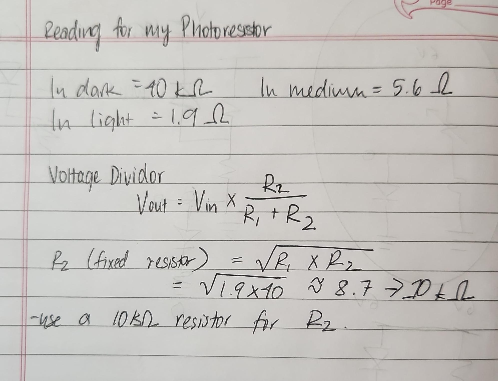
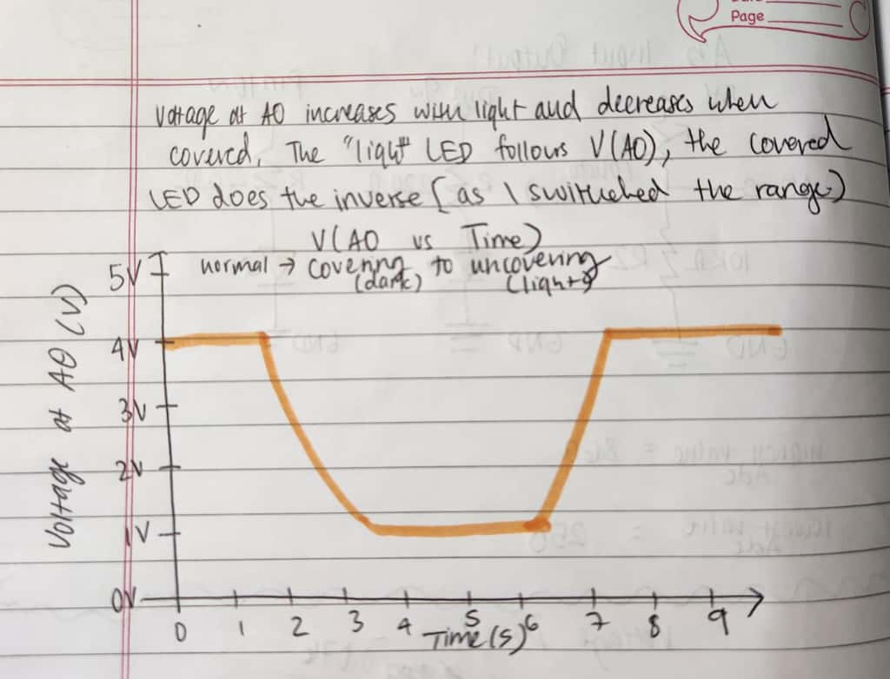
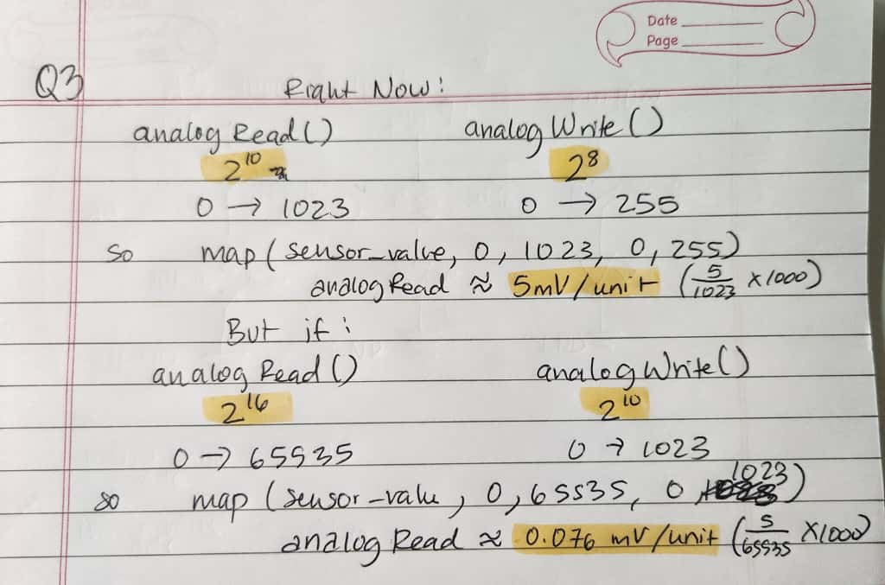

Assignment 3:Input Output!
Firmware-Code from Arduino IDE
/*This is Assignment 3, using a voltage divider, photosensor, and LEDs to control the light on the LED
Referenced the example code is in the public domain.
https://docs.arduino.cc/built-in-examples/analog/AnalogInOutSerial */
const int sensor_pin = A0; //adding an analog pin for the voltage divider
const int light_led_pin = 9; //the pin that will hold the LED for which more light will make dim
const int covered_led_pin = 10; //the pin that will hold the LED for which covering the sensor makes dim
const int adc_min = 250; //got the min value of adc by testing the range with the sensor
const int adc_max = 860; //got the max value of adc by testing the range with the sensor
const int middle_threshold = 500; //chose the middle value to keep as the cove
void setup() {
Serial.begin(9600); //intializing to set up the serial monitor using the baud value on screen
pinMode(light_led_pin, OUTPUT); //setting pin 9 as output
pinMode(covered_led_pin, OUTPUT); //setting pin 10 as output
}
void loop() {
int sensor_value = analogRead(sensor_pin); //going to read the voltage from sensor pon between 0-5V as integers 0-1230
if (sensor_value < adc_min) sensor_value = adc_min; //keeps the measured value from sensor to not go below the minimum adc value
if (sensor_value > adc_max) sensor_value = adc_max; //keeps the measured value from sensor to not go above the minimum adc value
int light_pwm = map(sensor_value, adc_min, adc_max, 0, 255); //mapping the sensorvalues to 0-255 (PWM)
int covered_pwm = map(sensor_value, adc_min, adc_max, 255, 0); //mapping the sensorvalues to 255-0 (PWM)
analogWrite(light_led_pin, light_pwm); //using the PWM range for the lighted LED
analogWrite(covered_led_pin, covered_pwm); //using the PWM range for the covered LED
if (sensor_value < middle_threshold) { //using this if statment to print out if the sensor is covered vs. lit up based on medium value pf ADC
Serial.print("Covered Mode → "); //will print if it's covered
} else {
Serial.print("Light Mode → "); //will print if it's shown light
}
Serial.print("adc="); //printing the adc number
Serial.print(sensor_value); //the sensor value
Serial.print(" light_pwm="); //prints the light PWM
Serial.print(light_pwm); //the value
Serial.print(" covered_pwm="); //prints the covered PWM
Serial.println(covered_pwm); //the value
delay(200); //pause to read the output
}
Additional Questions
Question 1
Yes in the voltage divider, the variable resistor can be either R1 or R2. The only difference is that it changes the relationship
between the light and the voltage. If R1 is the variable resistor, then the output voltage becomes higher in light and lower
in the dark. If R2 is the variable resistor, then the output voltage becomes lower in light and higher in the dark.

Question 2
This is the graph of the gif when i cover my sensor and the green LED dims.

Question 3
Essentially the mV per unit rate would become smaller, which means the sensor becomes more sensitive to the light. Even
the slightes change in light would cause a change in the voltage output. Here is the calculations for calculating the analogRead rate
<